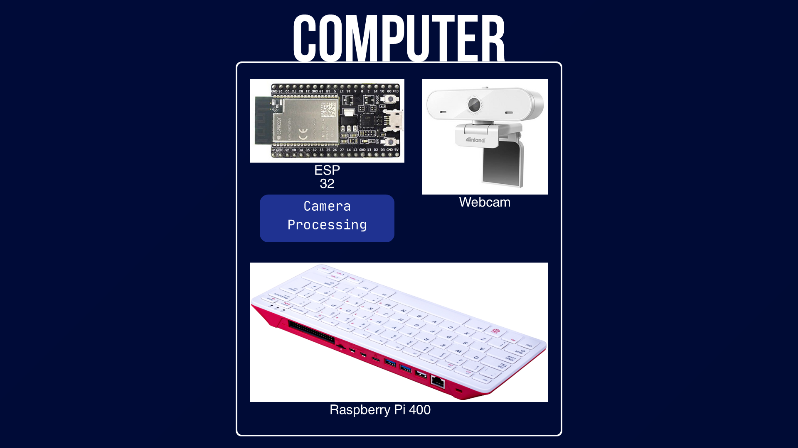
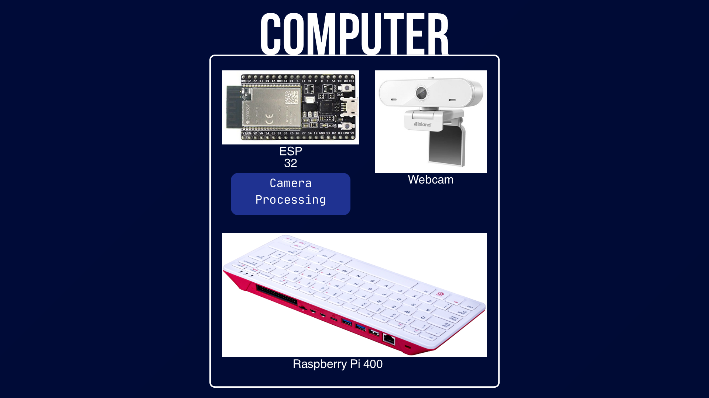

Project
Punch ‘n’ Pop: Rehabilitative Motion-Controlled Game
Punch ‘n’ Pop is an accessibility-focused system that bridges physical motor exercises with real-time digital interaction for users with limited dexterity. The platform fuses camera-based tracking and wearable IMU sensing to validate motion, classify strike intensity, and provide immediate feedback through scoring and visualization.
Demo
Replace ./assets/images/project-4-demo.mp4 with your gameplay demo or system walk-through.
Highlights
- Accessibility-first design: Created a rehab-friendly interaction loop that maps physical exercises to immediate in-game feedback for motivation and engagement.
- Sensor fusion: Combined OpenCV color tracking (HSV filtering) with MPU6050 IMUs to detect multi-quadrant gestures and validate movement.
- Strike intensity detection: Built a high-frequency heuristic (100–200 Hz) using jerk to classify strike strength while suppressing noise.
- Low-latency wireless: Implemented ESP32 + ESP-NOW messaging for sub-millisecond sensor-to-hub transfer and responsive gameplay.
- Realtime engine: Integrated a Python-based engine for rendering, scoring, and data synchronization.
System Overview
The system treats each movement as an “input event” backed by both vision and inertial signals. Vision estimates position/region (quadrant), while IMU dynamics validate motion quality and classify intensity. The ESP32 hub streams fused events into the game engine to update targets, scoring, and session logs in real-time.
Architecture
 



Technical Breakdown
Vision Tracking (OpenCV)
The vision pipeline isolates the target color via HSV thresholding and filtering. Detected regions are mapped into screen quadrants to infer gesture direction and interaction intent. This gives a stable spatial signal even for users with reduced dexterity.
IMU Processing & Strike Classification
IMU data from the MPU6050 is processed at high rate (100–200 Hz). A jerk-based heuristic (time-derivative of acceleration) distinguishes intentional strikes from slow drift and sensor noise, enabling intensity scoring without requiring large range-of-motion.
Wireless + Game Engine
ESP32 nodes stream events to a central hub using ESP-NOW for minimal latency. The Python engine consumes events for real-time rendering, scoring, and synchronization of session-level data (e.g., timestamps, hit rate, intensity distribution) for later analysis.
Key Takeaways
- Demonstrates human-centered robotics / accessibility engineering
- Fuses vision + inertial sensing to robustly validate user motion
- Shows embedded networking (ESP-NOW) with real-time performance constraints
- Connects physical interaction to software systems (rendering, scoring, data sync)